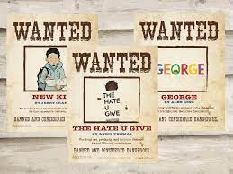

Book Bannings Come From Fear
Christian author and editor David Kopp sums up the traditional viewpoint on book banning when discussing the 1989 children's book Heather Has Two Mommies : “The deeper dilemma for many Christians who oppose this book is often not a theological one, but an emotional one. It has to do with what we fear. We fear our kids will be indoctrinated somehow. We fear they'll come to consider homosexuality as normal and then … the part we don't say … become one." We have historically viewed children as innocent and pure needing strict governance to develop. The desire to protect children from dangerous views lies at the core argument for banning books.
Children Are Not Empty Vessels
Research suggests children have complex reading experiences shaped not only by the text, but rather by social, personal, and cultural histories that are dynamic. Constantly changing with new life experiences the child encounters. Also suggesting the experience is the same for every individual, and therefore able to influence all readers the same way, is ridiculous. We all have different opinions and criteria for what constitutes good literature. Viewing literature as a means of ‘brainwashing’ is not correct, rather understanding and appreciating the complexities.
Changing The Perspective
“Book bans gain traction in cultures that imagine themselves as upholding a barrier between the purity of children and the corruption of the world.” This view has negative consequences, explained by Kerry H. Robinson, as limiting the development of well-informed, ethical, and critical thinking individuals. We must view children as active participants in the engagement of knowledge as treat books simply as representing ideas. Lastly, we must consider the responsibilities of parents during this growth and how having difficult discussions removes the fear associated with book banning.
 Banning books can draw more attention to them then they had beforeInformation by The Free Speech Center Banned Books Week: Book bans reflect outdated beliefs about how children read" · Images by Alexandria